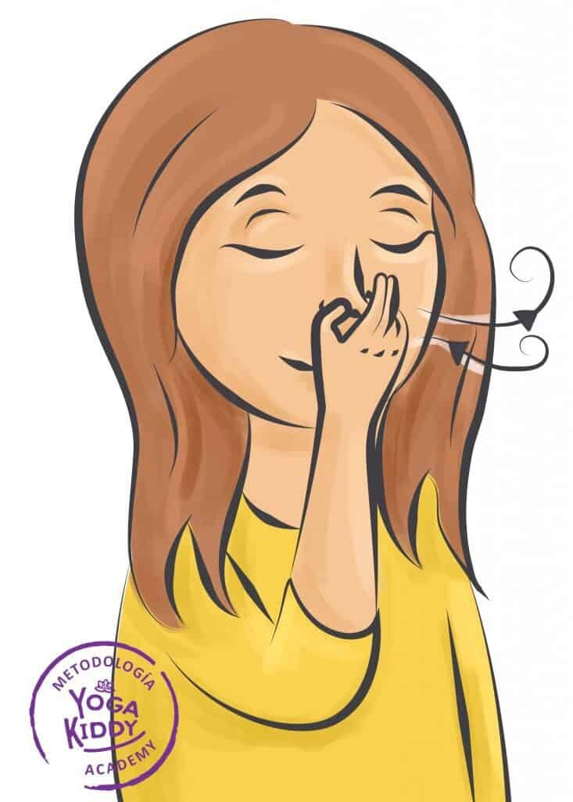

¿Cuántas veces al día tomas consciencia de tu respiración? ¿En cuántas oportunidades percibes entrar y salir el aire de tu cuerpo?
Para muchos el acto de respirar se ha vuelto en una acción mecánica, sin tener la vigilancia amorosa necesaria para abrazar su potencialidad y su trascendencia.
La rapidez con que se mueve el mundo, nos incita a dejar de escucharnos, de mirarnos, de sentirnos, de cuidarnos, convirtiendo los procesos de nuestro cuerpo en acontecimientos banales y sin la necesidad de ser atendidos, comprendidos y visualizados como actos sagrados.
Cuando conocemos nuestra respiración, nos acercamos a la pulsación del alma, a nuestra esencia más pura, la cual merece todo el cuidado. Lo primero es observar nuestra inhalación y exhalación, para conocer sus intensidades, velocidades y como ello opera sobre nuestro cuerpo físico, mental, emocional y espiritual. Luego podemos, indagar sobre las múltiples variaciones que el proceso respiratorio ofrece y de qué manera este puede verse beneficiado.
Los niños y niñas al conocer sus procesos respiratorios, les permite tomar consciencia sobre cómo a través de ella pueden obtener estados de calma y tranquilidad. Convierten el respirar consciente en una herramienta, invitándoles a disfrutar del presente, ya que ella abre la puerta a los umbrales más sutiles de la existencia. La respiración nos y les permite aumentar el grado de atención, la contención de las emociones y favorecer el lenguaje oral.
Proporcionales herramientas para la toma de conciencia de su respiración, es brindarles la posibilidad de encontrarse con ellos mismos, de establecer un vínculo con sus mundos interiores para así convertirse en seres humanos con conocimiento de sus cuerpos, de sus emociones, de sus pensamientos, de todo lo que son.
Aquí algunos ejemplos:
Inhalación por nariz y Exhalación por boca.
- Respiración vela y flor: Imaginar que en una mano tenemos una flor y en la otra una vela. Inhalamos para percibir el aroma y de la flor y luego exhalamos por la boca para apagar la vela. (repetir al menos 5 veces)
- Respira como una pluma: Entregar una pluma a cada niño/a e invitarles que la coloquen sobre su palma para observarla con atención. Luego inhalamos profundo y exhalando por la boca, hacemos que la pluma viaja muy lejos. (Repetir al menos 5 veces)
Inhalación y Exhalación por nariz.
- Respiración de la Montaña: En la postura de la montaña, manos frente al pecho, inhalo elevo los brazos al cielo, exhalo y regreso al centro. (Repetir 3 veces).
- Respiración Gato Feliz, Gato Enojado: Inhalo abro el pecho (gato feliz), exhalo encorvo la espalda (gato enojado). Con esta respiración podemos enseñarles a las(os) niñas(os) que a través de la respiración podemos ayudar a nuestra mente a calmar los pensamientos. Si estamos enojados como el gato, podemos sentarnos, escuchar cómo respiramos y transformar el enojo en felicidad.
Peggysue.S.S